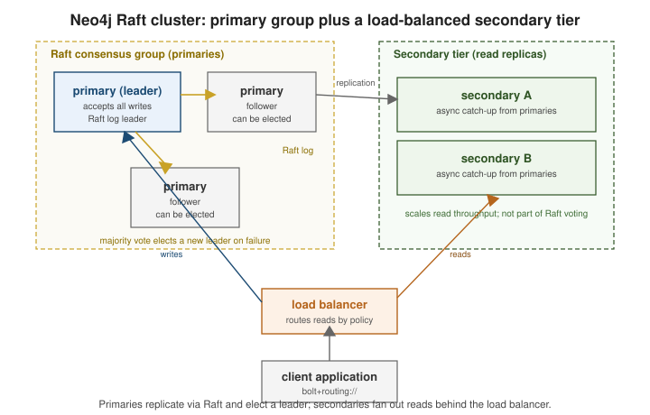

Clustering & multi-database
|
This content was generated with the assistance of AI and should be verified against the official documentation before being relied on in production. |
A Neo4j cluster replicates a database with the Raft consensus protocol among a small set of writable servers and fans out read traffic to a larger, independently scalable tier behind them. On top of that cluster, one DBMS can host many logical databases, optionally federated under a single composite database.
|
Clustering, |
Raft-based clustering: server roles and leader election
Terminology change: the server roles are now called primary and secondary — these replace the
legacy CORE and READ_REPLICA naming used by older Neo4j versions. A primary holds a full copy of
a database and takes part in Raft voting for it; a secondary holds a copy kept in step by asynchronous
catch-up but does not vote.

For each database, the primaries hosting it form one Raft group:
-
One primary is elected leader for that database and is the only server that accepts writes to it; the rest are followers.
-
Every write is appended to the leader’s Raft log and must be acknowledged by a majority of the primaries in the group before it is committed — this is what keeps the database available and consistent through the loss of a minority of primaries.
-
If the leader stops heartbeating, the remaining primaries hold a Raft election and a new leader is chosen by majority vote. A client driver using
neo4j://routing discovers the new leader automatically on its next write. -
Secondaries replicate committed transactions from the primaries asynchronously. They scale read throughput and geographic read locality without adding Raft voting overhead, and a load balancer (or driver-side routing) can steer read traffic to them while writes go to the leader.
How many primaries, and what survives
Raft needs a majority of a database’s primaries to commit a write and to elect a leader, so the number of primaries sets how many can be lost:
| Primaries | Majority | Failures tolerated while staying writable |
|---|---|---|
1 |
1 |
none — a single primary is not highly available |
2 |
2 |
none — both must be up, so two is worse than one for availability |
3 |
2 |
one primary |
5 |
3 |
two primaries |
An odd number is therefore the rule: adding a fourth primary to a three-server group raises the majority to three without tolerating any additional failure. Secondaries do not count toward the majority, so they can be added freely for read capacity. The life of one write, and of one leader failure, looks like this:
The driver learns the new topology from the routing table it fetches over the neo4j:// scheme, which lists which
servers currently hold the writer, reader and router roles for the database; a bolt:// URI pins the driver to a single
server and gets none of this. Reads run on followers or secondaries and may lag the leader slightly; bookmarks
(see Transactions & Drivers) give a client causal consistency by
making a read wait until the server has applied a given transaction.
See Clustering for the full server-role and topology reference, and Clustering: Lifecycle for how a server joins, leaves, and is replaced within a running cluster.
Multi-database and composite databases
A single DBMS instance (or cluster) can host several independent databases, each with its own data, schema, and — in a cluster — its own Raft group of primaries. Databases are managed with Cypher administration commands rather than a separate tool:
// Create a new database (async by default -- add WAIT to block until it comes online)
CREATE DATABASE `orders` IF NOT EXISTS WAIT;
// List every database and its per-server role/status
SHOW DATABASES YIELD name, address, role, currentStatus;
// Inspect one database in detail
SHOW DATABASE `orders` YIELD name, currentStatus, requestedStatus;
// Take a database offline, then drop it
STOP DATABASE `orders`;
DROP DATABASE `orders` IF EXISTS;In a cluster, CREATE DATABASE also chooses how many servers host the new database in each role:
CREATE DATABASE orders TOPOLOGY 3 PRIMARIES 2 SECONDARIES;
SHOW SERVERS;The TOPOLOGY clause creates a three-primary Raft group plus two secondaries, and SHOW SERVERS lists the servers
that make up the cluster and their state. On a single, non-clustered server SHOW DATABASES returns the following
(the output of the Community server used here):
name, address, role, currentStatus
"neo4j", "localhost:7687", "primary", "online"
"system", "localhost:7687", "primary", "online"Every DBMS has the system database, which stores users, roles, privileges and the database catalog itself; it is
administered with the same Cypher commands but holds no application data. Which database a query runs against is chosen
by the driver session (database= option), by :use in Browser, or per query with USE.
Terminology change: the current term for federating multiple databases under one virtual, queryable namespace is a composite database — this is the same capability formerly marketed as Fabric. A composite database has no data of its own; it exposes a set of constituent databases (which can live on the same DBMS or be reached over the network) as named graphs that a single Cypher query can address together.
// Create a composite database, then attach constituents to it
CREATE COMPOSITE DATABASE analytics;
CREATE ALIAS analytics.orders FOR DATABASE orders;
CREATE ALIAS analytics.inventory FOR DATABASE inventory;
// Query across constituents from the composite database
USE analytics.orders
MATCH (o:Order) RETURN count(o);An alias name is written as one dotted identifier, analytics.orders: the part before the dot is the composite
database and the part after it is the constituent. Writing the parts as separate quoted names
(analytics.orders) is rejected by the parser with incorrectly formatted graph reference ... Separate name parts
should not be quoted individually; quote the whole name in one pair of backticks if it contains unusual characters.
A constituent can also be a database on another DBMS, reached through a remote alias that carries the remote URI and
credentials (CREATE ALIAS ... FOR DATABASE ... AT 'neo4j+s://host:7687' USER ... PASSWORD ...).
A single query on the composite database can read several constituents and combine the results, for example by running
a subquery against each with USE and aggregating the returned rows. The composite database is a federation layer for
querying across constituents: it is how data that is partitioned by tenant, region or time is queried as a whole, whereas
sharding in the document-database sense (one collection split across servers) is a different design.
Aura’s managed take. Neo4j Aura provisions and operates the primary/ secondary Raft topology above for you — a Professional or Business Critical instance is backed by a managed cluster with automatic leader failover, and Aura additionally handles patching, backup scheduling, and scaling the secondary tier without exposing the underlying server administration commands. Multi-database and composite databases are available on the tiers that support them, managed through the Aura console and the same Cypher administration commands shown above rather than through any cluster-lifecycle command, since Aura owns that layer — see the Aura documentation for which capabilities each tier includes.
Related pages
-
MongoDB Replica sets & high availability — a primary/secondary replica set with heartbeat-driven election, contrasted with Neo4j’s Raft-based leader election.
-
MongoDB Horizontal scaling with sharded clusters — partitioning one logical collection across many shards, as a contrast to Neo4j’s per-database Raft group and composite-database federation.
-
Couchbase Clusters, replication, failover & XDCR — vBucket-based intra-cluster replication and cross-datacenter XDCR as another distributed-topology model.